圖像表示與特徵生成動機（引言）
▼數位影像在電腦裡就是一張二維陣列 $I(m,n)$，每個位置 $(m,n)$ 的數值叫像素（pixel），代表那一點的亮度。影像的「深度」$N_g$ 是灰階階層數，例如 $N_g=256$ 就是 0~255 共 256 階灰。
就算是一張小小的 $64\times64$ 影像，也有 4096 個像素；直接拿這 4096 個數值當特徵餵給分類器，既耗計算又容易過度配適（泛化差）。特徵生成的目的，就是把影像陣列 $I(m,n)$ 變成數量少、卻能把不同類別「分得開」的新變數。
本章沿兩條主線走：影像分析（紋理、形狀、碎形）與音訊分類（短時窗、頻譜）。
把 $64\times64$ 影像的 4096 個原始像素直接當分類特徵，主要問題是？
影像深度 $N_g$ 指的是？
一階統計特徵（灰度直方圖）
▼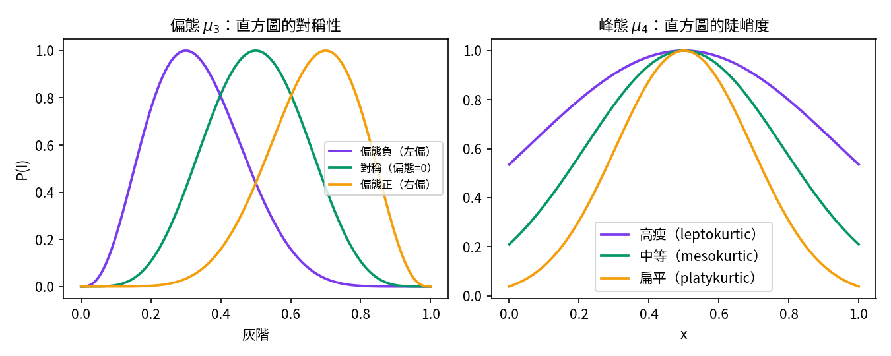
🤖 AI 生圖可用：重繪此示意圖的提示詞（結構化）
WHAT: 一階直方圖的三個統計量——偏態(μ3)與峰態(μ4)。 WHY: 展示灰階分布如何被偏態與峰態描述。 MUST show: 左圖三條不同偏態的分布曲線(負偏/對稱/正偏)，右圖三條不同陡峭度的峰態曲線(高瘦/中等/扁平)。 AVOID: 不要只畫單一鐘形曲線。 STYLE: clean scientific line plot, white background, three curves per panel, legend.
把影像某一區塊的灰度當成隨機變數 $I$，統計每種灰度出現的比例，得到一階直方圖：
$$P(I)=\frac{\text{灰度為 }I\text{ 的像素數}}{\text{區塊總像素數}}\tag{7.1}$$
從 $P(I)$ 可算出一連串特徵：
- 矩 $m_i=E[I^i]=\sum_I I^i P(I)$：$m_1=E[I]$ 是均值。
- 中心矩 $\mu_i=E[(I-E[I])^i]$：$\mu_2=\sigma^2$（變異數，量直方圖寬度）、$\mu_3$（偏態，量對稱性）、$\mu_4$（峰態，量陡峭度）。
- 熵 $H=-\sum P(I)\log_2 P(I)$：量直方圖是否均勻。
直覺：變異數大→灰階分得散；偏態≠0→直方圖歪向一邊；峰態大→集中在少數灰階。
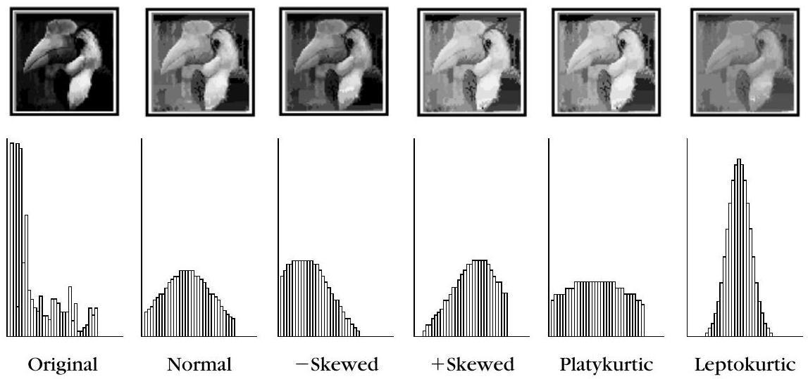
一階直方圖能告訴我們影像的？
直方圖「偏態」對應的中心矩是？
二階統計特徵：共相關矩陣
▼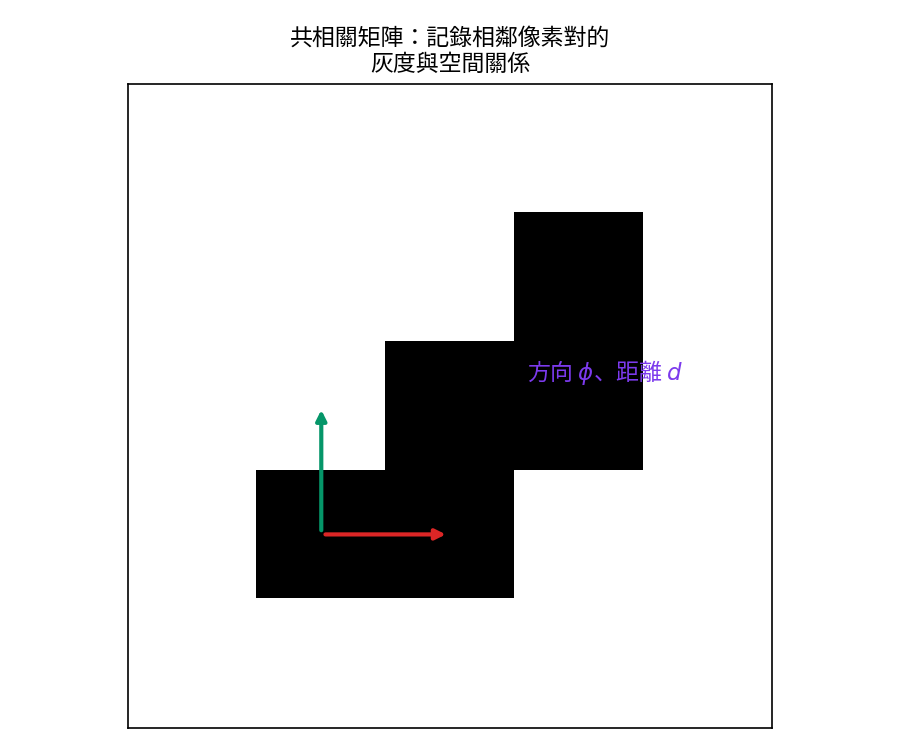
🤖 AI 生圖可用：重繪此示意圖的提示詞（結構化）
WHAT: 共相關矩陣的建構。 WHY: 展示像素對在方向φ與距離d下的空間關係。 MUST show: 一個小影像格陣列，用彩色箭頭標出水平(0°)與垂直(90°)方向的像素對。 AVOID: 不要畫成普通的灰階直方圖。 STYLE: flat scientific diagram, small pixel grid, white background, red/blue directional arrows.
一階統計看不出「哪些灰階彼此相鄰」。要抓紋理得看像素對：相距 $d$、方向 $\phi\in\{0^\circ,45^\circ,90^\circ,135^\circ\}$ 的兩像素灰度 $(I_1,I_2)$ 一起出現的機率，構成共相關（co-occurrence）矩陣：
$$A=\frac{1}{R}\big[\eta(I_1,I_2)\big]$$
$\eta(I_1,I_2)$ 是「距離 $d$、方向 $\phi$ 下灰度為 $I_1,I_2$ 的像素對數」；$R$ 是可能像素對數總。由此定義 Haralick 特徵：
- ASM $=\sum_{i,j}P(i,j)^2$：量平滑度，全同灰階→1。
- Contrast $=\sum_n n^2\sum_{|i-j|=n}P(i,j)$：量對比，$n^2$ 放大大差異。
- IDF $=\sum_{i,j}\frac{P(i,j)}{1+(i-j)^2}$：低對比時較高。
- Entropy $H_{xy}=-\sum_{i,j}P(i,j)\log P(i,j)$：量隨機程度。
旋轉容忍：實務上對四個方向取平均，讓特徵對旋轉不敏感。
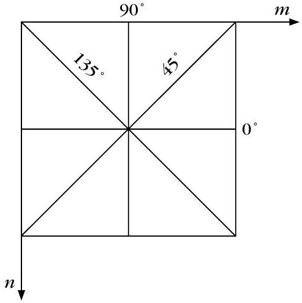
二階共矩陣比一階統計多了哪種資訊？
對同一影像的共矩陣，把四方向結果平均是為了？
灰階游程長度特徵
▼灰階游程（run）是一串連續且灰度相同的像素。以游程長度矩陣 $Q_{RL}(i,j)$ 記錄「灰度 $i$ 以游程長度 $j$ 出現的次數」，是 $N_g\times N_r$ 矩陣。
由此定義：
- SRE（短游程強調）：用 $1/j^2$ 加權，強調短游程→粗糙紋理大。
- LRE（長游程強調）：用 $j^2$ 加權，強調長游程→平滑紋理大。
- GLNU（灰階不均勻）：灰度間游程分布差異。
- RLN（游程不均勻）：游程長度間分布差異。
直覺：粗糙紋理游程短→SRE 大；平滑紋理游程長→LRE 大。
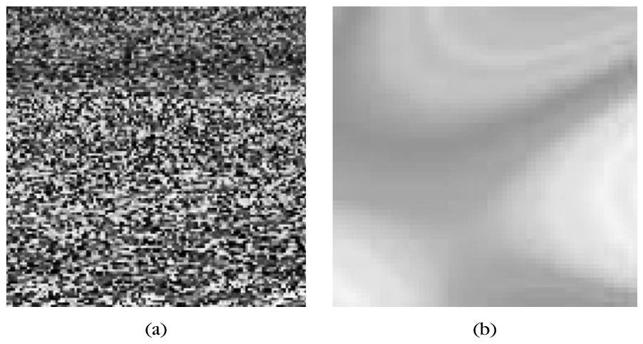
平滑影像（大面積同灰度）通常哪個特徵值較大？
局部線性轉換（Laws 遮罩）
▼另一種抓紋理的方法是局部線性轉換。取 $N\times N$ 鄰域當向量 $\boldsymbol{x}_{mn}$，乘線性轉換矩陣 $A^T$：
$$\boldsymbol{y}_{mn}=A^T\boldsymbol{x}_{mn}$$
相當於用 $N^2$ 個遮罩（mask）捲積原圖，得到 $N^2$ 個新「通道」影像。Laws 用三個基本向量組出 9 個 $3\times3$ 遮罩：
- $[1,2,1]^T$：局部平均（平滑）
- $[-1,0,1]^T$：邊緣偵測
- $[-1,2,-1]^T$：斑點偵測
遮罩彼此做外積產生 9 個遮罩；對每個通道再算一階統計（變異、峰態）當特徵。
精髓：原本影像的空間相依（二階）被吸收進每個通道的一階統計裡。
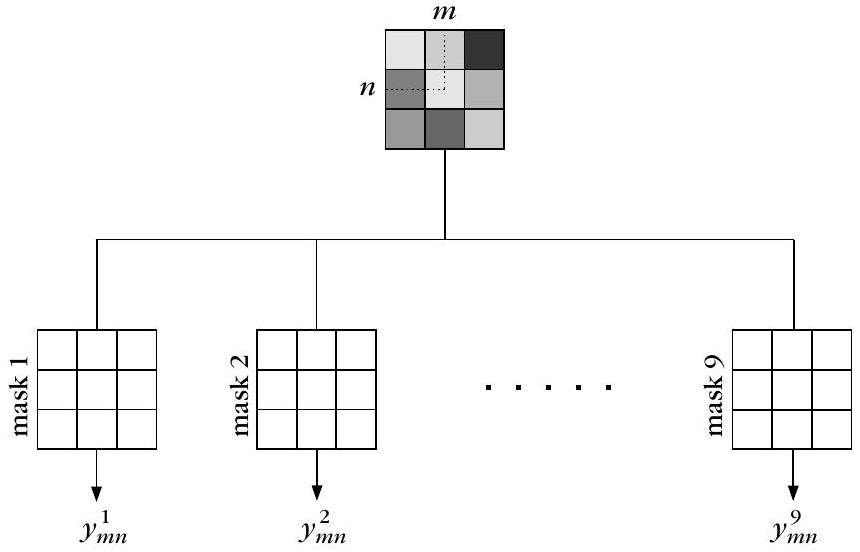
Laws 的三個基本向量主要對應哪三種局部特徵？
幾何矩與中心矩
▼影像 $I(x,y)$ 的幾何矩：
$$m_{pq}=\iint x^p y^q I(x,y)\,dx\,dy\tag{7.21}$$
幾何矩可完整表示一張影像（可由所有階重建）。中心矩以質心為原點：
$$\mu_{pq}=\int\int (x-\bar x)^p(y-\bar y)^q I(x,y)\,dx\,dy\tag{7.22}$$
其中 $\bar x=m_{10}/m_{00}$、$\bar y=m_{01}/m_{00}$。歸一化中心矩 $\eta_{pq}=\mu_{pq}/\mu_{00}^{\gamma}$（$\gamma=(p+q+2)/2$）對平移、縮放不變。
直覺：一階矩=$\bar x$（質心）；二階矩描述分布的方向與寬度。
中心矩對哪種幾何變換不變？
Hu 七不變矩
▼Hu 定義了七個對平移、縮放、旋轉都不變的矩，由歸一化中心矩組合。例如前兩個：
$$\phi_1=\eta_{20}+\eta_{02},\quad \phi_2=(\eta_{20}-\eta_{02})^2+4\eta_{11}^2$$
前六個對反射（鏡射）也不變，$\phi_7$ 在鏡射時變號。實務上常用 $\log|\phi_k|$ 當特徵以避免精確度問題。
七個不變矩中哪個在「鏡射（reflection）」時會變號？
Zernike 矩
▼幾何矩所用的單項式 $x^p y^q$ 不互正交，特徵有資訊重複。Zernike 矩改用單位圓 $x^2+y^2\le1$ 內完備正交的 Zernike 多項式：
$$A_{pq}=\frac{p+1}{\pi}\iint_{x^2+y^2\le1} I(x,y)V^*(\rho,\theta)\,dx\,dy$$
$V_{pq}(\rho,\theta)=R_{pq}(\rho)e^{jq\theta}$。其大小 $|A_{pq}|$ 對旋轉不變。對數位影像，把像素投影進單位圓再求和即可。Zernike 矩在雜訊環境下比 Hu 矩表現更好。
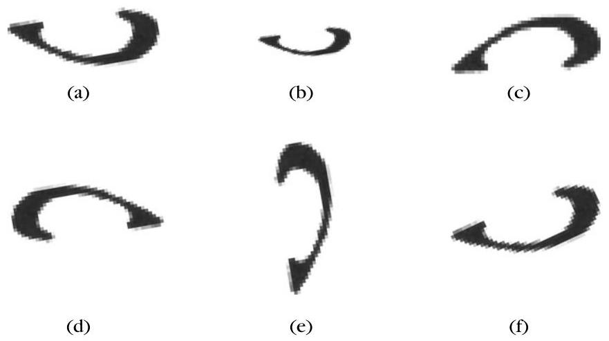
Zernike 矩的主要優點是？
一維 AR 參數模型
▼把隨機序列 $I(n)$ 想成「由過去的樣本 + 一個白雜訊刺激」產生。自迴歸 AR($p$) 模型：
$$I(n)=\sum_{k=1}^{p} a(k) I(n-k)+\eta(n)\tag{7.26}$$
$p$ 是階數，$a(k)$ 是 AR 參數，$\eta(n)$ 是白雜訊。AR 比 ARMA 好的地方是參數估計會得到線性方程組。
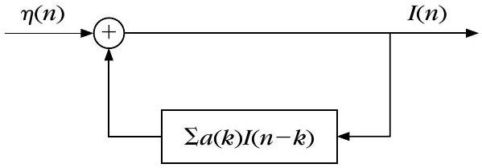
AR($p$) 模型的輸出由哪兩部分構成？
AR 參數估計（Levinson）
▼AR 參數 $a(k)$ 可視為線性預測器的係數：用前 $p$ 個樣本預測當前值，$\eta(n)$ 是預測誤差。最小化均方預測誤差得法方程：
$$E[I_p I_p^T]\boldsymbol a=E[I(n)\boldsymbol I_p(n-1)]$$
自動相關矩陣 $\boldsymbol R$ 是對稱 + Toeplitz（各對角線相同）。利用此結構，Levinson 演算法可 $O(p^2)$ 解（而非一般 $O(p^3)$）。預測誤差變異：$\sigma_\eta^2=r(0)-\sum_{k=1}^p a(k) r(k)$
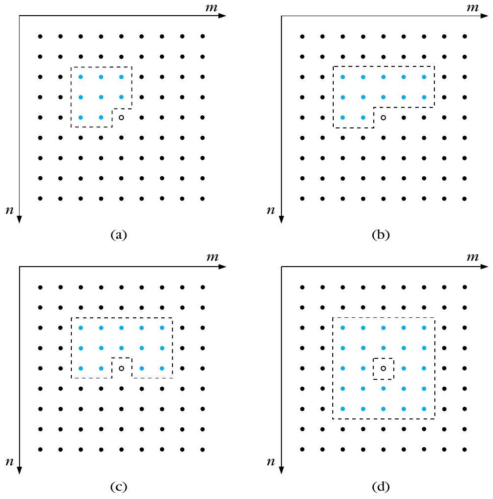
Levinson 演算法善用了自動相關矩陣的哪個性質？
二維 AR 模型
▼對影像 $I(m,n)$ 定義二維 AR 預測：
$$\hat I(m,n)=\sum_k\sum_l a(k,l) I(m-k,n-l)$$
依鄰域窗 $W$ 分：強因果/因果/半因果/非因果。非因果窗對稱 $a(k,l)=a(-k,-l)$。自動相關等向時矩陣呈塊 Toeplitz，可用 Levinson 型演算法求解。
二維 AR 中「非因果窗」的窗 $W$ 有何特徵？
Fourier 描述子（形狀）
▼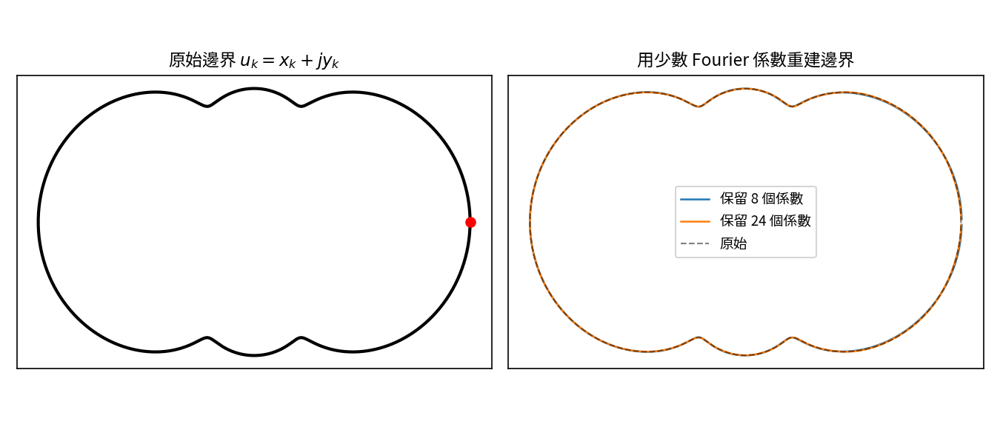
🤖 AI 生圖可用：重繪此示意圖的提示詞（結構化）
WHAT: 用 Fourier 描述子重建影像邊界。 WHY: 展示少量傅立葉係數即可逼近原始輪廓。 MUST show: 左為原始邊界(u_k=x_k+jy_k)，右為用少量係數重建的輪廓與原始重疊對比。 AVOID: 不要只畫一個圓。 STYLE: clean scientific plot, white background, two-panel boundary comparison, blue original / red reconstructed.
把影像區塊邊界取 $N$ 個取樣點 $(x_k,y_k)$，組成複數 $u_k=x_k+jy_k$。其 DFT 係數 $f_l$ 稱為 Fourier 描述子：
$$f_l=\sum_{k=0}^{N-1} u_k \exp\left(-j\frac{2\pi}{N}lk\right)$$
幾何變換對描述子的影響很乾淨：
- 平移：只影響 $f_0$。
- 旋轉：所有 $f_l$ 相位乘同因子，大小不變。
- 縮放：所有 $f_l$ 同倍，比值 $f_i/f_j$ 不變。
- 取樣起點移動：相位變、大小 $|f_l|$ 不變。
因此可用歸一化讓描述子對這些變換不變。
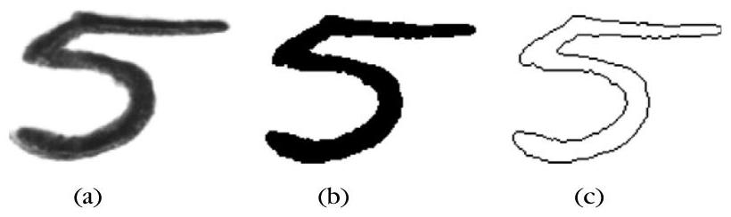
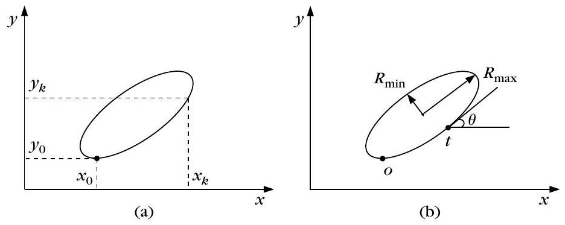
Fourier 描述子的哪些性質使其適合做形狀辨識？
鏈碼（Chain Codes）
▼鏈碼把邊界表示成一段方向碼序列：沿邊界從起點走，每個單位步長用一個方向編碼（如 4-鄰域：$0,1,2,3$；8-鄰域：$0..7$）。序列本身攜帶形狀資訊。
問題是對起始點與旋轉敏感。差分鏈碼（取相鄰方向碼之差）可消除起點影響；對旋轉做歸一化可減少旋轉敏感。
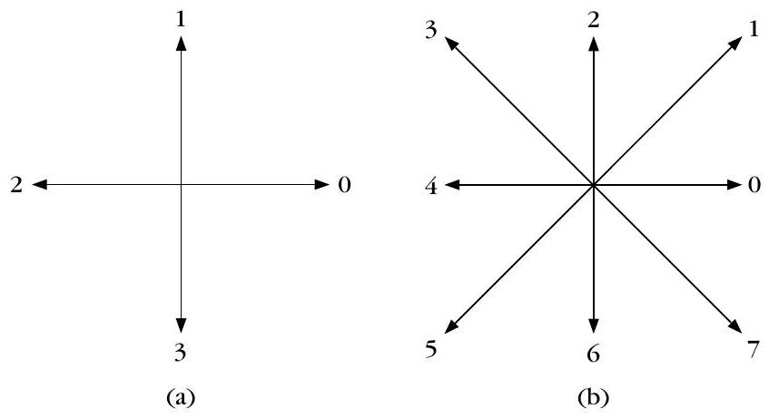
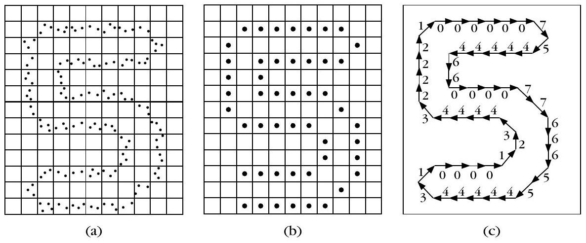
「差分鏈碼」的目的是？
基於矩陣的形狀特徵
▼由二階中心矩可定義方向與離心率：主軸方向角：$$\theta=\frac12\tan^{-1}\frac{2\mu_{11}}{\mu_{20}-\mu_{02}}$$離心率 $e$ 量「物體多像一根棒」，$e\to1$ 棒狀、$e\to0$ 圓形。這些是緊湊的形狀特徵，對平移不變。
離心率 $e$ 接近 0 表示？
幾何特徵（周長/面積/圓度）
▼直接由區域量到的描述性特徵：周長（邊界長）、面積、圓度、凸包/孔洞數等。這些是「描述性」而非「再生性」——能描述形狀但不足以重建。常與離心率、不圓度等一起組成特徵向量。
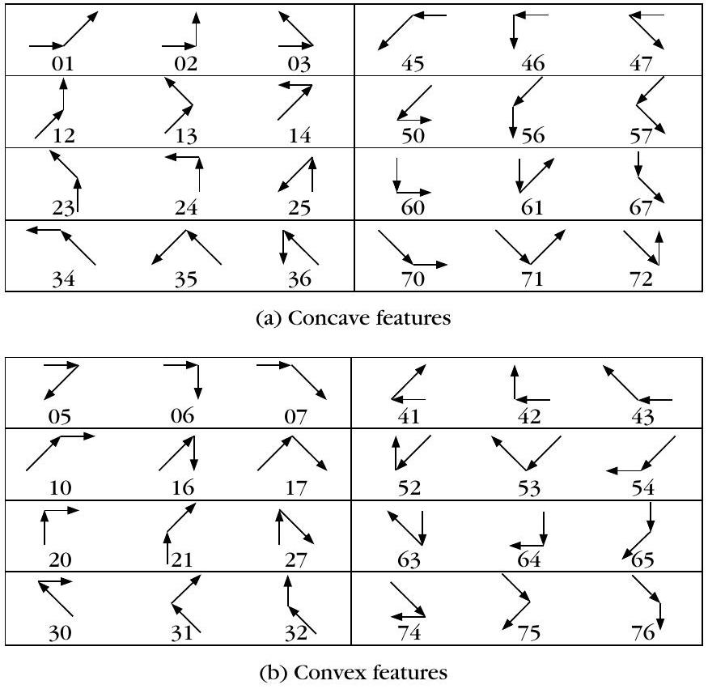
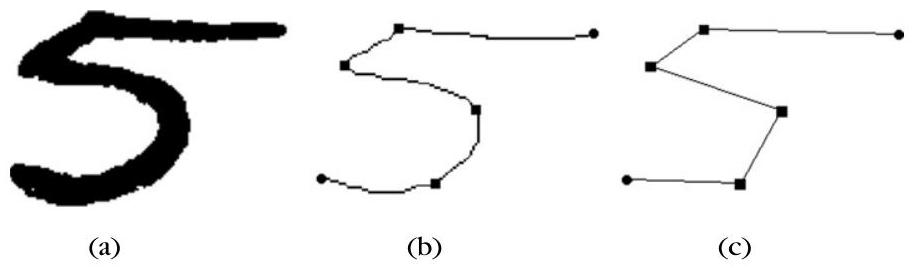
周長與面積這類特徵是？
自相似與碎形維度
▼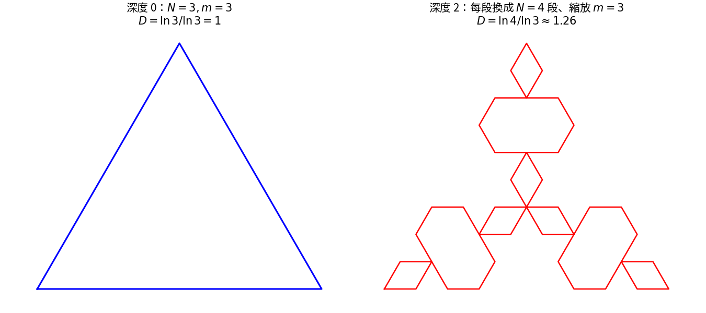
🤖 AI 生圖可用：重繪此示意圖的提示詞（結構化）
WHAT: Koch 雪花與碎形維度 D=ln N/-ln m。 WHY: 展示自相似結構與維度如何隨遞迴深度改變。 MUST show: 左深度0(D=1)、右深度2(D≈1.26)兩級對比，標出 N 與 m。 AVOID: 不要只畫一條直線。 STYLE: clean scientific plot, white background, two-panel Koch curve comparison at different recursion depths.
碎形是「自相似」的物件：把細部放大與整體相似的結構。Koch 雪花的碎形維度：
$$D=\frac{\ln N}{-\ln m}$$
$N$ 是每段取代的線段數、$m$ 是縮放比。碎形維度衡量「邊界有多崎嶇」——介於拓撲維與歐氏維之間。
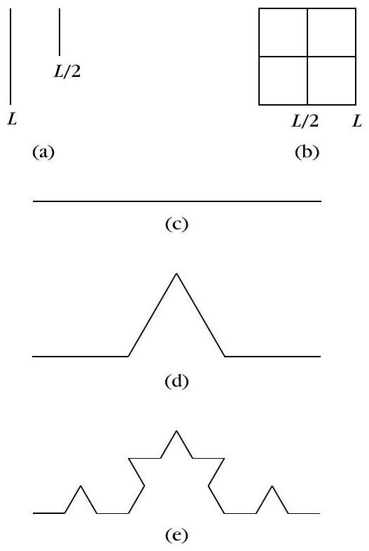
碎形維度 $D=\ln N/-\ln m$ 愈大代表？
分數布朗運動與 Hurst 參數
▼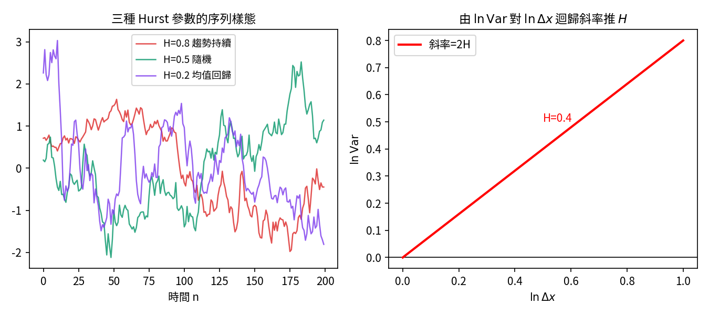
🤖 AI 生圖可用：重繪此示意圖的提示詞（結構化）
WHAT: 分數布朗運動與 Hurst 參數 H。 WHY: 展示不同 H 下序列樣態(趨勢持續 vs 均值回歸)及如何由 log-log 斜率推 H。 MUST show: 左三條不同 H 的序列軌跡；右 log(Var)對 log(Δx)斜線標 2H。 AVOID: 不要只畫單一隨機軌跡。 STYLE: clean scientific two-panel plot, white background, multiple colored trajectories, log-log regression line.
分數布朗運動（fBm）的方差與增量尺度成冪律：$\mathrm{Var}\big(I(x)-I(x+\Delta x)\big)\propto\Delta x^{2H}$。$H$ 是 Hurst 參數，$0\lt H\lt 1$。$H\gt 0.5$ 表示「趨勢持續」、$H\lt 0.5$ 表示「均值回歸」。對 $\ln(\mathrm{Var})$ 對 $\ln(\Delta x)$ 迴歸，斜率 $=2H$。碎形維度 $D=2-H$（對影像）。
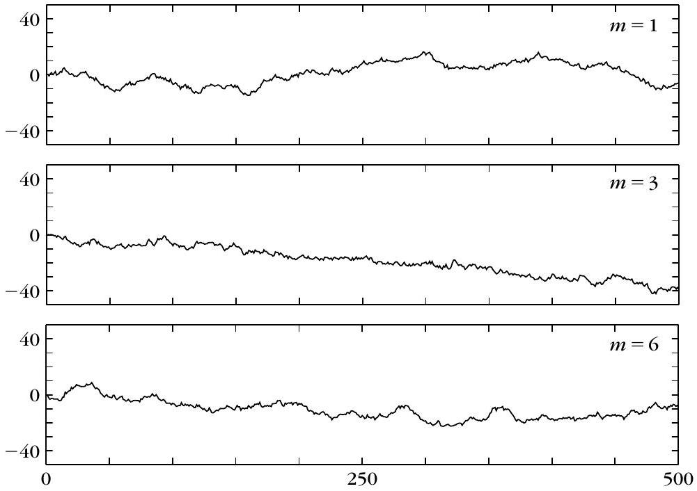
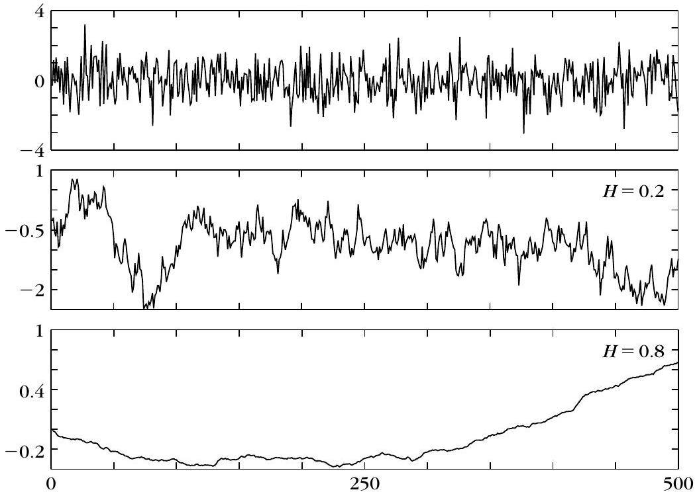
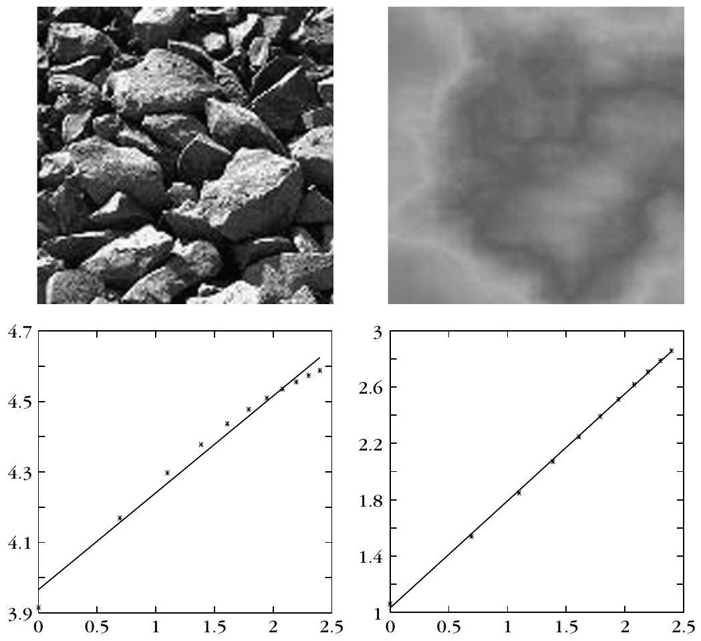
Hurst 參數 $H\gt 0.5$ 表示序列？
音訊特徵：短時處理
▼語音/音訊非平穩（統計特性隨時變）。解法是分框：把訊號切成連續小框（frame），每框內近似平穩（準平穩 quasistationary）。框長 $N$ 是「藝術」：要夠長才有資料、夠短才平穩。常用窗函數（Hamming 等）降低框邊緣效應，並讓相鄰框部分重疊。
每框算出的特徵（如過零率、能量、頻譜）隨時間排列，便成特徵軌跡。
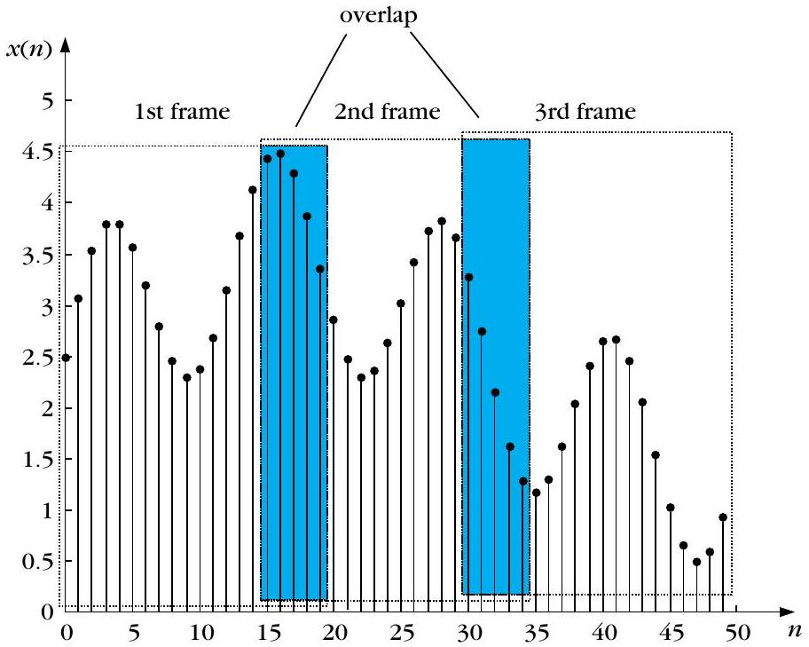
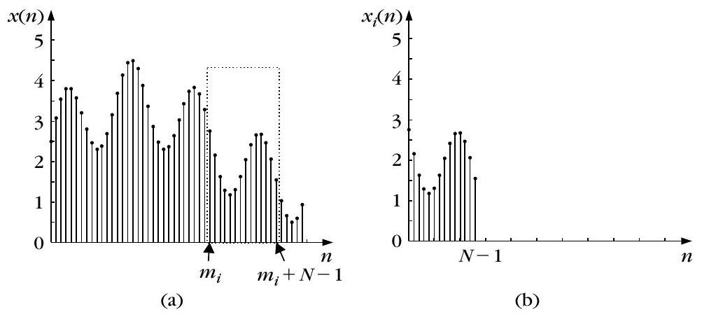
語音訊號為何要「切短框」處理？
倒頻譜（Cepstrum）
▼倒頻譜把「頻譜的對數」再做一次反傅立葉變換：
$$c(n)=\frac1{2\pi}\int_{-\pi}^{\pi} \ln|X(\omega)| e^{j\omega n}d\omega$$
用意是把聲源（激發）與聲道（濾波）分開——在對數譜上兩者變相加，倒頻域就分離成不同位置。可估計基頻（找 peak）與語者特徵。
倒頻譜能把哪兩個語音成分分離？
梅爾倒頻譜（Mel-Cepstrum / MFCC）
▼人類聽覺在低頻較敏銳、高頻較粗糙（Mel 刻度）。MFCC 把頻譜照 Mel 刻度分成若干濾波器組，取對數再 DCT：
- 分框 → 每個框做 FFT。
- 過 Mel 濾波器組、取 $\log$。
- DCT 得係數 $c_i$（稱 MFCC）。
MFCC 是最流行的語音/音訊特徵，對說話者與環境有較好魯棒性。
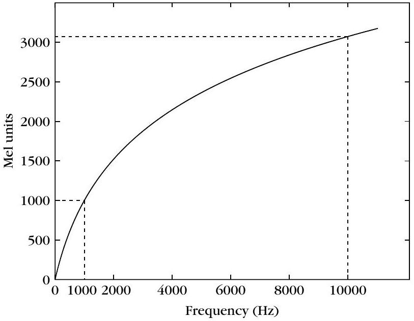
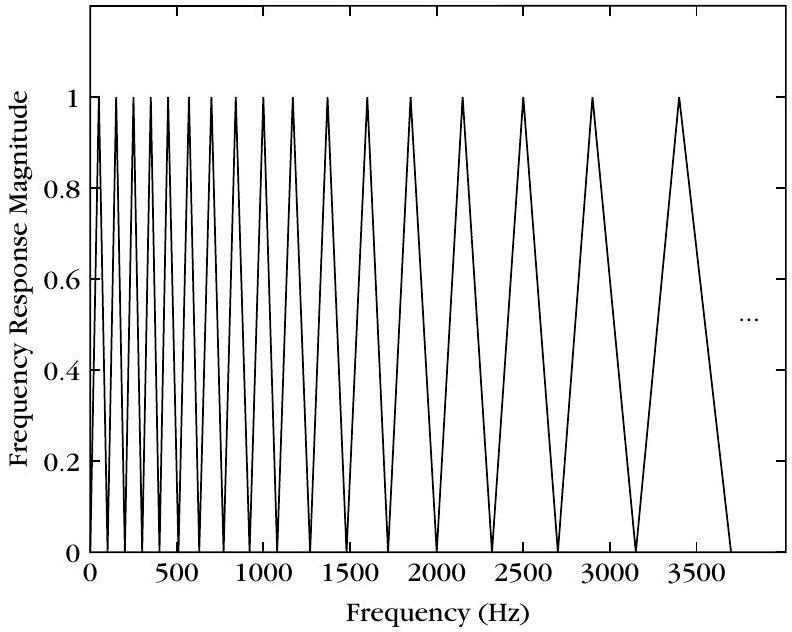
MFCC 最常做哪些語音處理的基礎特徵？
頻譜特徵
▼從頻譜可抓更直觀特徵：頻譜質心（能量集中位置，brightness）、頻譜展點/頻帶 Roll-off（頻譜累積達某閾值處）、頻譜流量 Flux（頻譜隨時間變化量）、基頻頻率 Fundamental Frequency（基本音高）。這些對音樂/語音分類很有用。
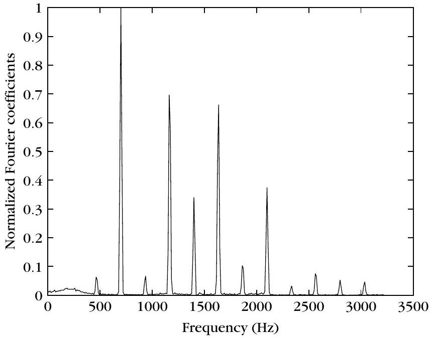
頻譜質心（Spectral Centroid）大致對應人類感知的？
時域特徵：過零率與能量
▼在時域最簡單特徵：過零率（ZCR）——每框訊號穿越零軸的次數/比例，粗糙量「高頻含量」或清音/濁音。能量（Energy）——框內樣本平方和，量響度，常用對數。時域特徵運算便宜、即時好用。
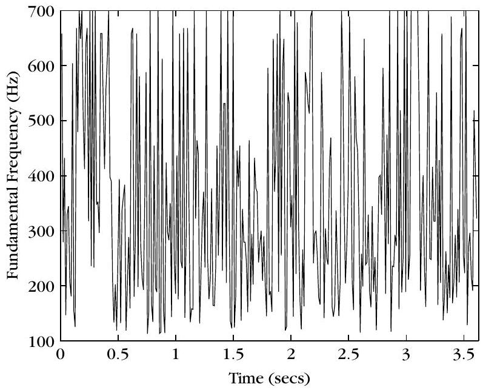
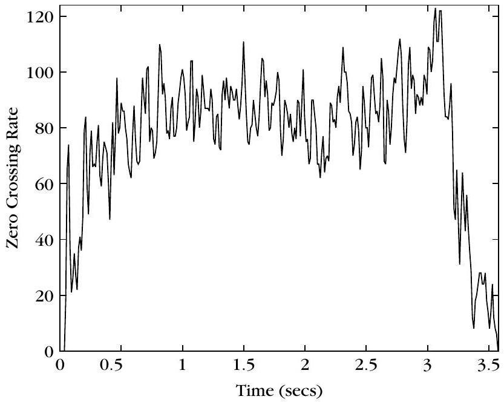
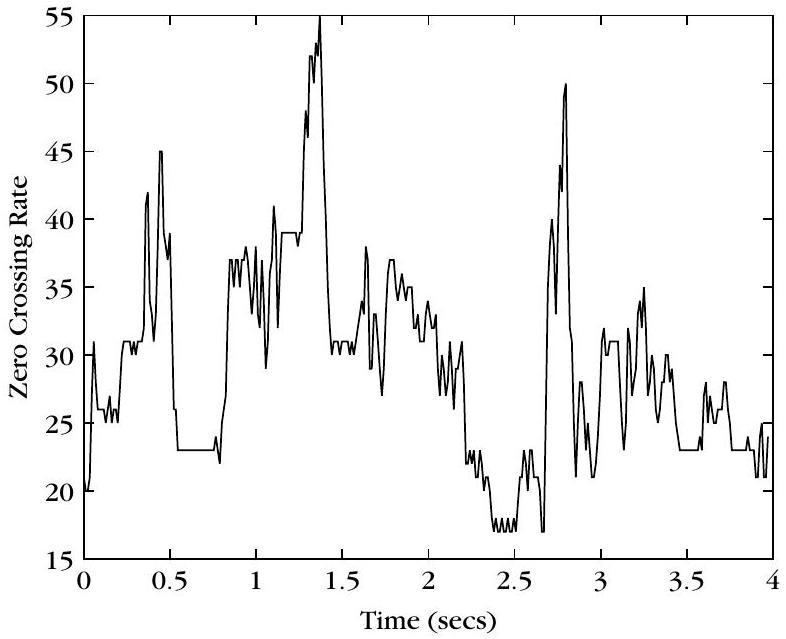
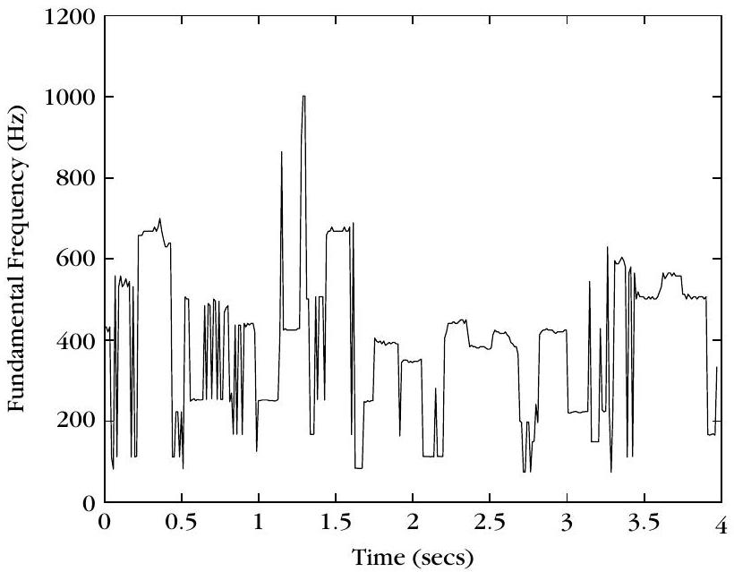
過零率偏高通常表示？